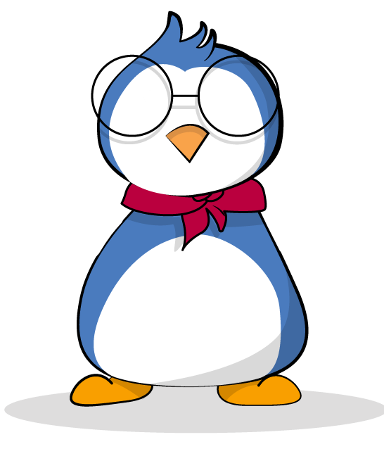

Un side project ? Késako ?
Etant une doublante (2.5 pour les néophytes du langage employé en DWM), je m’attendais à ce que les consignes soient les mêmes que l’année précédente, et l’année précédente, et l’année précédente, … en bref un portefolio et une présentation de soi en vue d’avoir un stage.
Je me suis donc mise assez à l’avance afin de produite quelque chose de professionnel dans les temps. J’avais déjà fais une ébauche de design et lorsque je m suis rendue près d’un professeur afin d’avoir un premier feedback il m’a dit que les consignes changeraient cette année… VDM
Cette année le thème était: un side projetc. Il m’a déjà fallut 2 bonnes heures avant de comprendre le concept (pourtant je vous assure que je ne suis pas blonde sous le bleu!) Je suis donc partie sur une idée assez farfelue mais qui me bottait pas mal, je voulais faire un site web sous forme de story telling racontant une histoire pour enfant, avec de jolies illustrations, avec des animations et interactions.


Compétences mises en avant :
- design d’une landing page (UI)
- illustrations
- ergonomie d’un jeu pour enfant (UX)
- animations CSS
Le problème ?
Le problème était que nous devions réaliser un site project dans le domaine duquel nous voudrions notre stage. Etant donné que je veux me diriger vers un stage plutôt orienté design, je n’allais pas réaliser un side project avec des illustrations.
Après discution avec des professeurs, je ne voyais toujours pas vers quoi me diriger, j’avais peur de réaliser un projet trop maigre rapport à tous les autres qui font des projets de fou orientés code. On m’a donc suggéré de réaliser une landing page qui claque, présentant une application fictive ou réelle (si elle existe en s’adaptant au design de celle-ci.)
Je suis donc restée plusieurs jour à cogiter, me demandant ce que j’allais bien pouvoir présenter comme application… Au début je pensais me tourner vers l’application Made In Asia. Pour rappel, j’avais comme projet de réaliser leur application et ensuite de leur vendre étant donné l’importance de ce salon en Belgique et qu’ils n’ont tout simplement pas de site web responsive et encore moins d’application mobile/web app. Cependant, je ne voulais pas me confiner dans une charte graphique que je n’avais pas choisi.
Projet-ception
J’ai donc réfléchis (oui ça m’arrive)… ET… je me suis dit: “Etant donné que l’année prochaine tu vas devoir créer un projet, pourquoi ne pas présenter celui-ci dans ton TFA ? Ton TFE dans ton TFA !” J’ai proposé l’idée et ce fût valider ! Victoire ! Au moins c’est déjà ça.
Mon projet consiste en à la création d’un jeu éducatif afin d’aider les enfants “dys” à acquérir une autotomie de travail et un suivi de qualité. Et de là le projet a pu voir le jour…
La page blanche
J’avoue avoir eu assez de mal à trouver une charte graphique, les moodboard n’y ont rien changé. Autant l’élaboration de la mascotte et du logo se sont fait tout naturellement, autant le choix des typos et des couleurs fut laborieux. J’avais les wireframes, je connaissais mon public cible et vers quoi je voulais me diriger mais impossible de visualiser les couleurs.
Je suis donc restée assez longtemps sans ien produire tout simplement car dès que je t’entais quelque chose je perdais juste des jours et des jours car je n’arrivais à rien.
J’ai donc décidé de me mettre devant mon tableau blanc, j’ai pris un feutre, et j’ai fais un brainstorming pour savoir quelle étaient les informations importantes, vers quoi je voulais clairement me diriger etc.
J’en suis donc venue à la première conclusion que mon jeu serait une application desktop en priorité jusque tablette, il n’est tout simplement pas optimiser pour le smartphone tout simplement car se serait trop petit à lire et à utiliser pour un enfant.
La deuxième conclusion était que mon jeu serait pour les enfants de 5 à 8 ans, il fallait donc des illustrations simples, avec peu de couleurs différents et des contours noir afin de différencier les différents éléments, du coup pourquoi ne pas partir sur un style un peu clipart ?
Enfin pour le choix des couleurs, un pingouin est généralement soit noir soit bleu, je trouvais le bleu plus sympas pour des enfants. Si Aidy doit être l’ami de l’enfant je n’allais pas le représenter au pole nord, l’enfant ne s’y identifierait pas. J’ai donc décidé de le faire dans un environnement simple, de jour, avec un ciel bleu, des nuages et un sol tout ce qui a de plus commun
Le Défi
N’ayant jamais utilisé illustrator de ma vie avant cela j’ai d’abord tenté de réalisé toutes mes illustrator sur photoshop à la tablette graphique, c’était ce que je voulais ! Cependant, une fois réintégration du design je me suis rendue compte qu’il y avait un décalage entre le style “dessin à la main” et le flat design du site…
Je me retrouvais donc au pied du mur avec 2 solutions: changer totalement de design pour qu’il colle plus à mes dessins ou refaire les illustrations dans le style du site…
Etant donné que le site me plaisant vachement, pour une fois j’étais vraiment fière de ce que j’avais produit, j’ai du me résoudre à ouvrir illustrator. Ayant plusieurs amis doué avec ce logiciel je leur ai demandé pas mal d’aide. Au final je n’aime toujours pas ce logiciel mais je sais faire un minimum avec, ce qui est toujours mieux que rien.
J’ai été demandé du feedback sur mon travail qui a été très intéressant, ça m’a pas mal fait réfléchir et il s’avère que les remarques étaient très pertinents, mon travail est totalement différent juste en ayant changé 4–5 éléments !
L'intégration
Le code de ce site était un challenge car j’y ai utilisé des svg pour les fonds mais également pour l’animation du pingouin. Choses que j’avais en partie faites pour le workshop DataPlay, je l’ai approfondi ici, en effet le design est la branche du web qui me botte le plus avec l’ergonomie/expérience utilisateur, mais j’aime aussi beaucoup les animation css.
JA part ça une fois la machine lancée tout s’est fait assez naturellement, je suis actuellement en train de réaliser mon portfolio indépendamment de ce TFA. Doublé m’a apporté beaucoup et même si sur le moment on se dit qu’on perd un an, au final c’était plus que bénéfique et j’ai pu approfondir ce qui me plaisait et améliorer ce dans quoi j’étais moins douée.
L'élaboration
Pour le projet en lui même j'ai commencé par faire des croquis des personnages, des œufs, des exercices et des écrans de jeu que je réaliserai l'année prochaine.
J'ai du me mettre à la place d' un enfant de 5 ans et me poser tout un tas de question comme "Qu'est-ce que je comprendrais ou ne comprendrais pas ? Comment j'aimerais qu'on me parle ? Qu'est-ce que j'aimerais faire sur ce jeu pour que ça paraisse moins scolaire ? Quelle couleurs utiliser ? combien dois-je en mettre ? un contour noir ou non ?"
De là je me suis lancée dans la réalisation de 5 écrans afin d'expliquer le concept de mon futur jeu avec un écran d'accueil, un choix d'avatar, personnalisation des infirmations de l'enfant, choix des exercices ainsi qu'un exemple d'exercice.
Ce projet me tien vraiment à cœur et je suis contente d'avoir pu me lancer dans cette aventure. Je pense avoir bien level up point de vue design depuis l'année passée, c'est en forgeant que l'on devient forgeront et maintenant, j'aime ce que je fais et je sais ce que je veux faire de ma vie !
Je vous invite à vous rendre dans l’article “à propos” afin d’en savoir un peu plus sur moi et sur la rechercher de mon stage.